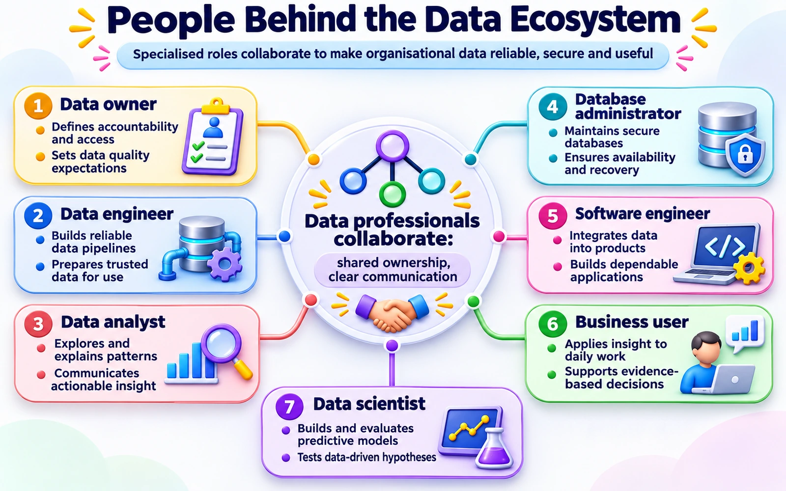

Who does what?
Each role has a different focus, but dependable data requires them to work together.

| Role | Primary responsibility |
|---|---|
| Data Engineer | Prepares and delivers reliable data for organisational use. |
| Data Analyst | Examines data and communicates findings. |
| Data Scientist | Explores patterns and develops predictive solutions. |
| Database Administrator | Manages database availability, performance and access. |
| Software Engineer | Develops applications that generate or use data. |
| Data Owner | Determines responsibility, access and appropriate use. |
| Business User | Uses information to perform work and support decisions. |
A useful analogy
- The data engineer prepares dependable routes for information.
- The data analyst uses available information to answer questions.
- The data scientist uses it to explore patterns and possible outcomes.
- The software engineer builds applications that produce or consume it.
- The data owner establishes how it should be managed and used.
Distinguishing three commonly confused roles
| Role | Main focus | Typical output |
|---|---|---|
| Data Engineer | Reliability, preparation and availability | Trusted datasets and data pipelines |
| Data Analyst | Explaining existing patterns and performance | Reports, dashboards and findings |
| Data Scientist | Prediction, experimentation and modelling | Models, forecasts and evaluated hypotheses |
Which direction does a data engineer face?
External-facing
Serves users of public applications—social media, e-commerce or IoT devices. Builds systems that collect and process transaction and event data, often feeding results back into the application. Must handle many simultaneous users and stricter security.
Internal-facing
Serves the business and internal stakeholders—pipelines and warehouses for reports, dashboards, business processes, data science and ML. In practice, many engineers do both.
Upstream and downstream collaborators
| Direction | Role | Relationship with the data engineer |
|---|---|---|
| Upstream (supply data or designs) | Data architect | Designs the blueprint for data across the organisation; the engineer implements it. |
| Software engineer | Builds the applications whose data the engineer ingests. | |
| DevOps / site-reliability engineer | Produce operational data and keep systems running. | |
| Downstream (use the data) | Data scientist | Builds predictive models from prepared data. |
| Data analyst | Explains past and present business performance. | |
| ML engineer / AI researcher | Trains, deploys and maintains models in production. |
Working with business leadership
Data engineers increasingly work with senior leaders who shape data strategy, including the chief executive officer, chief information officer, chief technology officer and chief data officer, as well as project managers and product managers who set priorities and deadlines.
Source: Reis, J. & Housley, M. (2022). Fundamentals of Data Engineering. O’Reilly Media, Chapter 1, pp. 22–31.